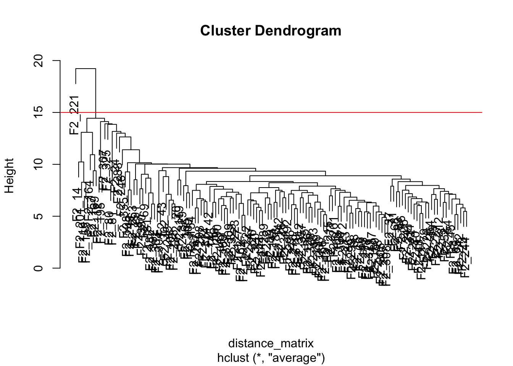
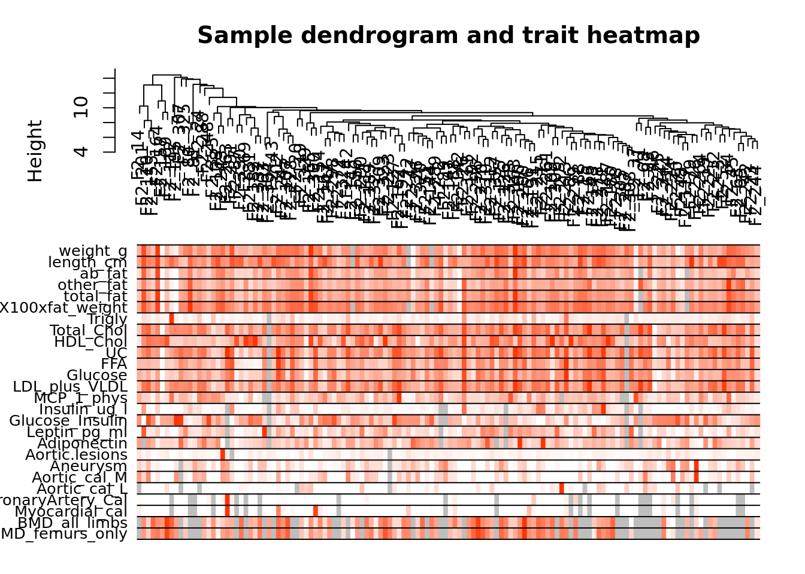
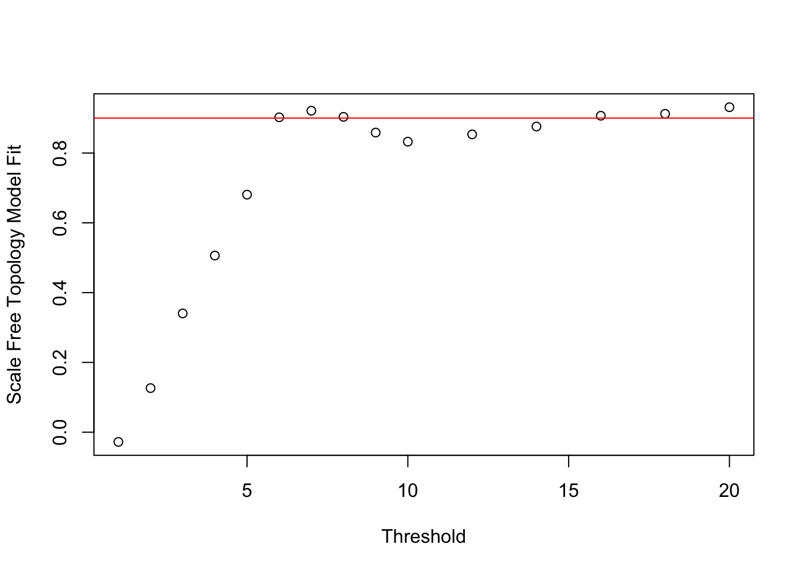
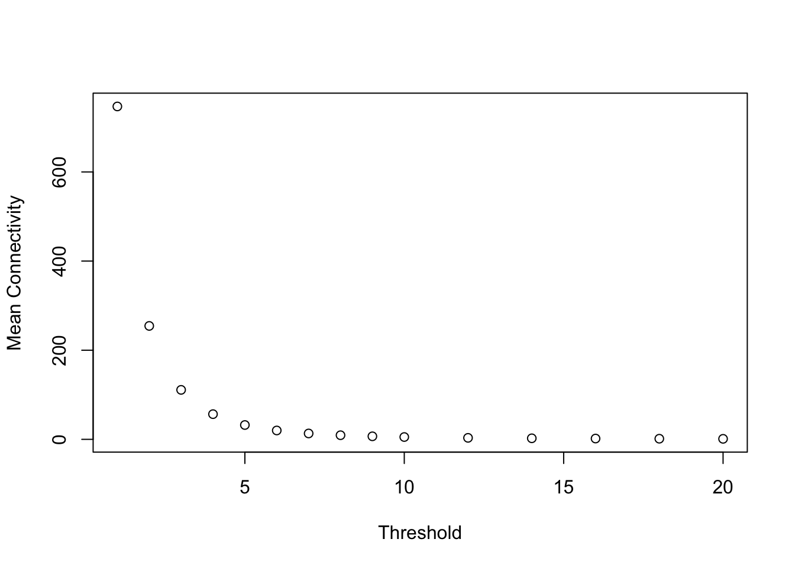
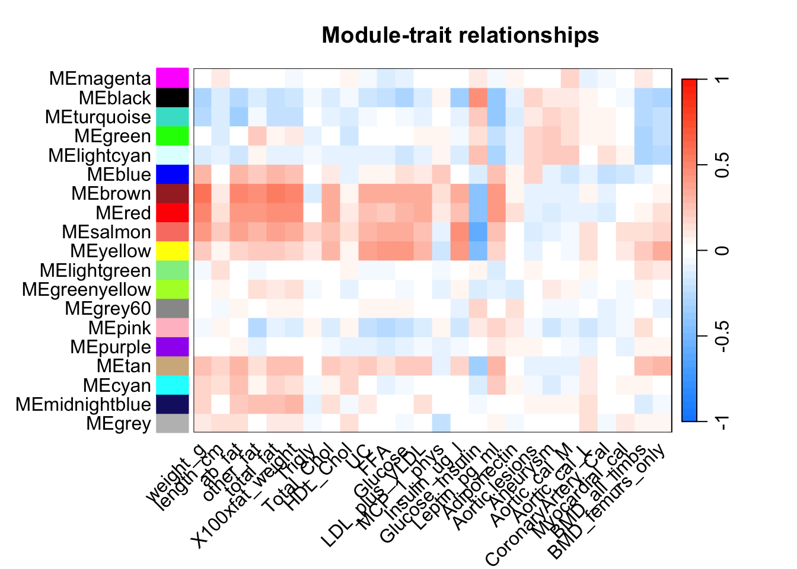

El Weighted Gene Co-expression Network Analysis (WGCNA) es un método de bioinformática muy potente que se utiliza para describir los patrones de correlación entre genes a lo largo de múltiples muestras. El método identifica módulos de genes, los resume mediante eigengenes de módulo y correlaciona estos con rasgos externos o fenotipos.
Conceptos básicos de WGCNA
Las redes de coexpresión génica se construyen calculando las correlaciones por pares entre los perfiles de expresión génica. Para capturar la relevancia biológica y la robustez, WGCNA utiliza una potencia de umbral suave (soft-thresholding power) para transformar la matriz de correlación en una matriz de adyacencia. Esta matriz de adyacencia \(a_{ij}\) representa la fuerza de conexión entre los genes \(i\) y \(j\), definida como:
\[
a_{ij} = |cor(x_i, x_j)|^\beta
\]
Donde:
\(cor(x_i, x_j)\) es la correlación entre el gen \(i\) y el gen \(j\).
\(\beta\) es la potencia de soft-thresholding, elegida para aproximar una topología de red scale-free.
Identificación de módulos
Los módulos son grupos de genes altamente interconectados. Se identifican utilizando clustering jerárquico de la Matriz de Solapamiento Topológico (TOM, Topological Overlap Matrix), que mide la similitud entre los vecindarios de genes. La TOM se calcula como:
\(k_i, k_j\) = El grado (suma de los pesos de las aristas) de los nodos \(i\) y \(j\), respectivamente.
De forma intuitiva, el numerador combina los vecinos compartidos y las conexiones directas entre \(i\) y \(j\). El denominador normaliza este valor en función del grado menor de los dos nodos (\(\min(k_i, k_j)\)), garantizando la comparabilidad en toda la red.
La TOM, por tanto, tiene en cuenta los vecinos compartidos: los nodos que no están conectados directamente pero comparten muchos vecinos tendrán un valor TOM alto. Esto captura relaciones indirectas, haciendo que TOM sea más robusta al ruido que las correlaciones simples por pares. También es una medida ponderada, ya que se basa en valores de adyacencia con peso, lo que le permite reflejar la fuerza de las relaciones en lugar de solo su presencia o ausencia.
Aplicaciones en biología de sistemas
Al identificar módulos de genes y sus relaciones con rasgos fenotípicos, WGCNA facilita el descubrimiento de genes clave y la obtención de información funcional en biología de sistemas. Este tutorial aplica WGCNA a datos de expresión hepática de ratones hembra, centrándose en identificar módulos génicos relacionados con el peso corporal.
The following object is masked from 'package:stats':
hclust
Adjuntando el paquete: 'WGCNA'
The following object is masked from 'package:stats':
cor
Antecedentes y descripción del conjunto de datos
La obesidad es un importante problema de salud pública en muchos países desarrollados. Mientras que algunas personas parecen mantenerse delgadas independientemente de qué o cuánto coman, otras parecen estar genéticamente predispuestas a la obesidad. La similitud genética entre el ratón y el ser humano convierte al ratón en un modelo mamífero prometedor para estudiar la obesidad.
La cepa de ratón C57BL/6J es susceptible a una variedad de afecciones relacionadas con la aterosclerosis, la diabetes, la obesidad y las enfermedades cardíacas, mientras que la cepa C3H/HeJ es resistente a ellas. Se espera que los ratones descendientes de este cruce F2 muestren un espectro significativo de respuestas de aterosclerosis y síndrome metabólico ante una dieta alta en grasas. Se midieron diversos rasgos fisiológicos, incluyendo el peso corporal de los ratones, la masa grasa, los niveles de insulina, glucosa y ácidos grasos libres en sangre, así como las fracciones de colesterol (HDL y LDL + VLDL). Extracto de: Steve Horvath. “Weighted Network Analysis.”
Utilizaremos datos de microarrays de las hembras del cruce F2 para examinar la organización a gran escala de la red de coexpresión génica en hígado y encontrar módulos génicos asociados al peso corporal.
Descargue los archivos y establezca su directorio de trabajo en la ubicación donde se encuentran.
# Set the working directory# In RStudio: Session -> Set Working Directory -> Choose Directorysetwd("path/to/your/data")
Entrada y preprocesamiento de datos
Este es el primer paso de cualquier análisis de redes. Aquí muestro cómo cargar datos de expresión típicos, preprocesarlos en un formato adecuado para el análisis de redes y limpiar los datos eliminando muestras claramente atípicas (outliers). Los datos de expresión se encuentran en el archivo LiverFemale3600.csv, enlazado arriba. Después de iniciar una sesión de R, cargamos los paquetes necesarios y los datos, tras establecer adecuadamente el directorio de trabajo.
# Load expression dataexp_data <-read.csv("LiverFemale3600.csv")##### Split and format datafeature_data <- exp_data[, 1:8] # Obtain data related to samplesassay_data <- exp_data[, 9:143] # Obtain gene expression data for samples# Add names to samplesrow.names(assay_data) <- feature_data$substanceBXH# We must transpose the matrix so we have samples as columnsassay_data <-t(assay_data)
Ahora vamos a comprobar que la matriz de expresión está en el formato requerido (genes × muestras):
Tenga en cuenta que los genes se identifican mediante los nombres de las sondas (probe names) (por ejemplo, MMT00000044) (estos datos provienen de un análisis de microarrays de expresión). Esto está bien por ahora, pero más adelante dificultará la interpretación de los resultados.
Identificación de muestras de microarrays atípicas (outliers)
A continuación, agrupamos las muestras para ver si existen outliers evidentes.
##### Cluster Data and remove outliers# We are now going to calculate how similar the samples to each otherdistance_matrix <-dist(assay_data)# We will now perform hierarchical clustering with the distance matrixsampleTree <-hclust(distance_matrix, method ="average")# Now plot the dendogramplot(sampleTree)# Add a horizontal line - we are going to take the biggest cluster below hereabline(h =15, col ="red")

Parece que hay una muestra atípica (outlier) (muestra F2_221). Se puede eliminar manualmente o usar un enfoque automático; elegimos un corte de altura (height cut) que eliminará la muestra problemática, por ejemplo 15, y aplicamos un corte de rama (branch cut) a esa altura.
# Remove outliers - "cut the tree"clust <-cutreeStatic(sampleTree, cutHeight =15, minSize =10)# How do they belong to clusters?table(clust)
clust
0 1
1 134
# clust 1 contains the samples we want to keep - subset assay_datadatExpr <- assay_data[clust==1, ]
La variable datExpr ahora contiene los datos de expresión listos para el análisis de redes.
Integración de rasgos clínicos
Ahora leemos los datos de los rasgos (traits) y los asociamos a las muestras para las que fueron medidos, coincidiendo con las muestras de expresión. También visualizamos los datos de los rasgos.
clin_data <-read.csv("ClinicalTraits.csv", row.names=2)clin_data <- clin_data[match(rownames(datExpr), rownames(clin_data)), ] # Select samples and order them according to exp_dataclin_data <- clin_data[, -c(30, 15)] # Remove mice attributesdatTraits <- clin_data[, c(10:35) ] # Further selection of mice attributesdatTraits[1:10,1:10]
Ahora tenemos los datos de expresión en la variable datExpr y los rasgos clínicos correspondientes en la variable datTraits. Antes de continuar con la construcción de la red y la detección de módulos, visualizamos cómo los rasgos clínicos se relacionan con el dendrograma de las muestras.
sampleTree2 <-hclust(dist(datExpr), method ="average")traitColors <-numbers2colors(datTraits, signed =FALSE) # Convert traits to a color representation: white means low, red means high, grey means missing entryplotDendroAndColors(sampleTree2, traitColors,groupLabels =names(datTraits), main ="Sample dendrogram and trait heatmap")

En el gráfico, blanco indica un valor bajo, rojo un valor alto y gris una entrada faltante.
# Load clinical traitstraitData <-read.csv("ClinicalTraits.csv")# Match traits to expression samplesallTraits <- traitData[, c(2, 11:36)]traitRows <-match(rownames(datExpr), allTraits$Mice)datTraits <- allTraits[traitRows, -1]rownames(datTraits) <- allTraits[traitRows, 1]# Visualize sample dendrogram with traitssampleTree2 <-hclust(dist(datExpr), method ="average")traitColors <-numbers2colors(datTraits, signed =FALSE)plotDendroAndColors(sampleTree2, traitColors, groupLabels =names(datTraits),main ="Sample dendrogram and trait heatmap")
Análisis de la topología de la red para elegir la potencia de soft-thresholding
Construir una red génica ponderada implica elegir la potencia de soft-thresholding \(\beta\) a la que se eleva la similitud de coexpresión para calcular la adyacencia [1]. Los autores de [1] han propuesto elegir la potencia de soft-thresholding basada en el criterio de aproximación a una topología scale-free. Aquí utilizaremos la función pickSoftThreshold, que realiza el análisis de la topología de la red y ayuda al usuario a elegir un valor adecuado para la potencia de soft-thresholding. El usuario selecciona un conjunto de potencias candidatas, y la función devuelve un conjunto de índices de red que deben inspeccionarse, por ejemplo, de la siguiente manera:
powers <-c(c(1:10), seq(from =12, to=20, by=2))# Call the network topology analysis function and try these valuessft <-pickSoftThreshold(datExpr, powerVector = powers, verbose =5)
pickSoftThreshold: will use block size 3600.
pickSoftThreshold: calculating connectivity for given powers...
..working on genes 1 through 3600 of 3600
Warning: executing %dopar% sequentially: no parallel backend registered
# Plot the results:# 1) Scale-free topology fit index as a function of the soft-thresholding power# We want the minimal power where the resulting network has a scale-free property.plot(sft$fitIndices[,1], -sign(sft$fitIndices[,3])*sft$fitIndices[,2],xlab="Threshold",ylab="Scale Free Topology Model Fit",)# this line corresponds to using an model filt cut-off of 0.9abline(h=0.90,col="red")

# We can also see how the value affects average connectivityplot(sft$fitIndices[,1], sft$fitIndices[,5],xlab="Threshold",ylab="Mean Connectivity")

El usuario debe elegir la potencia más baja para la cual la curva del índice de ajuste a topología scale-free se aplana al alcanzar un valor alto (en este caso, aproximadamente 0.90).
Construir la red génica e identificar los módulos ahora es una llamada de función sencilla. Recuerde que se debe elegir el valor correcto de \(\beta\) basado en el análisis del gráfico anterior.
pow <-6
Construcción de la red y detección de módulos
# This function implements the core of WGCNA - cluster genes and assign to modulesnet <-blockwiseModules(datExpr, power = pow,TOMType ="unsigned", minModuleSize =30,reassignThreshold =0, mergeCutHeight =0.25,numericLabels =TRUE, pamRespectsDendro =FALSE,saveTOMs =TRUE,saveTOMFileBase ="femaleMouseTOM", verbose =3)
Calculating module eigengenes block-wise from all genes
Flagging genes and samples with too many missing values...
..step 1
Cluster size 3600 broken into 2108 1492
Cluster size 2108 broken into 1126 982
Done cluster 1126
Done cluster 982
Done cluster 2108
Done cluster 1492
..Working on block 1 .
TOM calculation: adjacency..
..will not use multithreading.
Fraction of slow calculations: 0.396405
..connectivity..
..matrix multiplication (system BLAS)..
..normalization..
..done.
..saving TOM for block 1 into file femaleMouseTOM-block.1.RData
....clustering..
....detecting modules..
....calculating module eigengenes..
....checking kME in modules..
..removing 1 genes from module 1 because their KME is too low.
..removing 1 genes from module 7 because their KME is too low.
..removing 1 genes from module 8 because their KME is too low.
..removing 1 genes from module 21 because their KME is too low.
..merging modules that are too close..
mergeCloseModules: Merging modules whose distance is less than 0.25
Calculating new MEs...
Hemos elegido un tamaño mínimo de módulo relativamente grande de 30 y una sensibilidad media deepSplit=2 para la división de clusters. El parámetro mergeCutHeight es el umbral para la fusión de módulos. También hemos indicado a la función que devuelva etiquetas numéricas, en lugar de colores, para los módulos, y que guarde la Topological Overlap Matrix.
Nota: El eigengene de un módulo, ME, se define como el primer componente principal de un módulo dado. Puede considerarse como un perfil representativo de un módulo de coexpresión, que resume los patrones de expresión de todos los genes del módulo en un único vector.
But what exactly is an eigengene?
Los eigengenes de módulo son estadísticas resumen que capturan el “perfil de expresión génica” de un módulo particular en una red de coexpresión génica (como las utilizadas en WGCNA). Sirven como medida representativa de la actividad general de los genes dentro de un módulo, simplificando el análisis al reducir la dimensionalidad de los datos de expresión génica.
Cómo se calculan los eigengenes de módulo:
Crear una red de coexpresión génica:
Los genes se agrupan en módulos según su coexpresión (es decir, los genes que muestran patrones de expresión similares a través de las muestras se agrupan juntos).
Análisis de Componentes Principales (PCA):
Para cada módulo, se realiza un PCA sobre los datos de expresión génica de los genes dentro de ese módulo. El primer componente principal (PC1) de este análisis captura la dirección de máxima varianza (es decir, la variación más importante en los perfiles de expresión de los genes del módulo).
Eigengene del módulo:
El primer componente principal (PC1) del módulo se utiliza como eigengene del módulo. Este eigengene representa el patrón general de expresión de ese módulo, que puede interpretarse como un “resumen” o “perfil” único de los genes del módulo.
Por qué los eigengenes de módulo son útiles:
Reducción de dimensionalidad: En lugar de analizar cada gen individualmente, los eigengenes de módulo proporcionan un resumen para cada módulo génico, reduciendo la complejidad de los datos.
Interpretación biológica: Los eigengenes representan el patrón combinado de expresión de todos los genes en un módulo, facilitando el estudio del comportamiento general de un proceso biológico, vía o condición relacionada con ese módulo.
Correlación con rasgos: Los eigengenes pueden correlacionarse con rasgos externos (por ejemplo, estado de enfermedad, medidas clínicas), ayudando a identificar módulos asociados con condiciones biológicas o fenotipos específicos.
Ejemplo:
Si tienes un módulo de genes relacionados con la respuesta inmune, el eigengene del módulo resumirá el patrón de expresión de todos esos genes relacionados con la inmunidad a través de las muestras. Un valor alto del eigengene del módulo en una condición determinada (por ejemplo, cáncer) podría indicar que los genes relacionados con la inmunidad en el módulo están muy activos en esa condición.
En resumen, los eigengenes de módulo son una herramienta poderosa para simplificar el análisis de redes de coexpresión génica a gran escala y entender los procesos biológicos subyacentes.
Ahora podemos ver cuántos módulos se identificaron y cuáles son sus tamaños usando: table(net$colors)
Su salida indica que hay 18 módulos, etiquetados del 1 al 18 en orden de tamaño descendente, con tamaños que van de 609 a 34 genes. La etiqueta 0 se reserva para los genes fuera de todos los módulos. El dendrograma jerárquico (tree) usado para la identificación de módulos se devuelve en net$dendrograms[[1]]. El dendrograma puede mostrarse junto con la asignación de colores usando el siguiente código:
Aquí vemos cómo los genes se agrupan en diferentes módulos, correspondientes a los distintos colores en la banda de colores de los módulos.
Correlación de módulos con rasgos clínicos externos
Cuantificación de la asociación módulo–rasgo
Queremos identificar módulos que estén significativamente asociados con los rasgos clínicos medidos. Dado que ya tenemos un perfil resumen (eigengene) para cada módulo, simplemente correlacionamos los eigengenes con los rasgos externos y buscamos las asociaciones más significativas.
# Define numbers of genes and samplesnSamples <-nrow(datExpr)# Calculate module eigen gene values for each module - # Effectively the average expression of all genes in the module accross samplesMEs0 <-moduleEigengenes(datExpr, moduleColors)$eigengenesMEs <-orderMEs(MEs0)# Correlate the modules with the traitsmoduleTraitCor <-cor(MEs, datTraits, use ="p")moduleTraitPvalue <-corPvalueStudent(moduleTraitCor, nSamples)
Graficar las correlaciones módulo–rasgo
Como tenemos un número moderadamente grande de módulos y rasgos, una representación gráfica adecuada ayudará a interpretar la tabla. Codificamos cada asociación por color según el valor de la correlación:
# This is to set parameters for plottingpar(mar =c(6, 8.5, 3, 3))# Display the correlation values within a heatmap plotlabeledHeatmap(Matrix = moduleTraitCor,xLabels =names(datTraits),yLabels =names(MEs),ySymbols =names(MEs),colorLabels =FALSE,colors =blueWhiteRed(50),setStdMargins =FALSE,cex.text =0.5,zlim =c(-1,1),main =paste("Module-trait relationships"))

El análisis identifica varias asociaciones interesantes módulo–rasgo. Ahora nos enfocaremos en peso como rasgo de interés. Por ejemplo, el módulo marrón (brown module) representa un grupo de genes que está correlacionado con el peso, la grasa abdominal y otros niveles de grasa.
Relación de genes con el rasgo y módulos importantes: Gene Significance y Module Membership
Cuantificamos las asociaciones de genes individuales con nuestro rasgo de interés (peso) definiendo la Significancia del Gen (GS, Gene Significance) como el valor absoluto de la correlación entre el gen y el rasgo. Para cada módulo, también definimos una medida cuantitativa de pertenencia al módulo (MM, Module Membership) como la correlación entre el eigengene del módulo y el perfil de expresión del gen. Esto nos permite cuantificar la similitud de todos los genes del microarray con cada módulo. Matemáticamente, para un gen \(g\) en un módulo \(M\):
\(\text{Expr}(g)\): Gene \(g\)’s expression profile across all samples.
\(\text{ME}(M)\): The module eigengene of module \(M\).
# Some genes in each module are more representative than others of the eigen-gene values.# This is calculated as correlation betwen module eigen genes and gene expression# This can be used to filter large modules to obtain the most important ones using following code:geneModuleMembership <-as.data.frame(cor(datExpr, MEs, use ="p"))MMPvalue <-as.data.frame(corPvalueStudent(as.matrix(geneModuleMembership), nSamples))# Now rename - using the eigen gene names and replacing ME with MMmodNames <-substring(names(MEs), 3)names(geneModuleMembership) <-paste("MM.", modNames, sep="")names(MMPvalue) <-paste("p.MM.", modNames, sep="")
MM varía entre -1 y 1:
Valores altos de MM (cercanos a 1): El gen está fuertemente correlacionado con el eigengene del módulo, siendo un miembro central.
Valores bajos de MM (cercanos a 0): El gen tiene poca o ninguna relación con el módulo.
Valores negativos de MM: El patrón de expresión del gen está inversamente relacionado con el eigengene del módulo.
Por qué es útil la pertenencia al módulo
Priorización de genes clave en los módulos: Los genes con valores altos de MM se consideran los “genes centrales” (hub o core genes) del módulo. Son los más representativos del comportamiento del módulo y probablemente desempeñen roles centrales en los procesos biológicos asociados.
Identificación de biomarcadores candidatos: Los genes con MM alto son fuertes candidatos a biomarcadores o dianas terapéuticas, ya que impulsan los patrones de coexpresión del módulo, que pueden estar relacionados con fenotipos o rasgos específicos.
Comprensión de la estructura del módulo: MM ayuda a distinguir entre:
Genes centrales: Esenciales para la coherencia del módulo.
Genes periféricos: Débilmente conectados o parcialmente relacionados con el módulo. Esta comprensión es valiosa para la anotación funcional e interpretación del módulo.
Análisis de enriquecimiento funcional: Los valores de MM pueden ayudar a refinar los estudios de enriquecimiento funcional. Analizar solo genes con MM alto dentro de un módulo a menudo mejora la señal biológica al enfocarse en los genes más relevantes.
Identificación de genes atípicos o ambiguos: Los genes con MM bajo en un módulo pueden indicar posibles outliers, genes que no encajan bien en ningún módulo, o genes compartidos entre varios módulos.
Resumen de los resultados del análisis de red
Hemos encontrado módulos con alta asociación con nuestro rasgo de interés y hemos identificado sus genes centrales mediante la medida de Module Membership. Ahora fusionamos esta información estadística con la anotación génica y generamos un archivo que resume los resultados más importantes y puede inspeccionarse en software de hoja de cálculo estándar como MS Excel o Open Office Calc. Nuestros datos de expresión solo están anotados por ID de sonda (probe ID); el comando devolverá los probe IDs pertenecientes al módulo marrón (brown module).
Para facilitar la interpretación de los resultados, usamos un archivo de anotación de sondas proporcionado por el fabricante de los microarrays para conectar los probe IDs (como MMT00000044, visto anteriormente) con nombres de genes y códigos de identificación universales (códigos Entrez).
Creamos un data frame que contiene la siguiente información para todas las sondas: ID de sonda, símbolo génico, Locus Link ID (código Entrez), color del módulo, significancia del gen para peso, y pertenencia al módulo y valores p en todos los módulos. Los módulos se ordenarán por su significancia para el peso, con los más significativos a la izquierda.
annot <-read.csv(file ="GeneAnnotation.csv")probes <-colnames(datExpr)# We use this to match the genes in our experiment with the annotation file column probes2annot <-match(probes, annot$substanceBXH)# Create the starting data framegeneInfo0 <-data.frame(substanceBXH = probes,geneSymbol = annot$gene_symbol[probes2annot],LocusLinkID = annot$LocusLinkID[probes2annot],moduleColor = moduleColors)# Now we add to this the MM data using cbindgeneInfo <-cbind(geneInfo0, geneModuleMembership, MMPvalue)
Ahora tu tarea
Selecciona todos los genes que pertenecen al módulo marrón y realiza un ORA (Over-Representation Analysis) para ver si puedes encontrar algún enriquecimiento.